-

Project 2: Combinational Chips
Todo este proyecto se se realizó en base a nand2teris
Puedes descargar la carpeta con los resultados finales de esta parte del proyecto dando click aquí.
HALF ADDER
Tabla de verdad del HALF ADDER
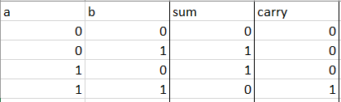Visualización grafica del HALF ADDER
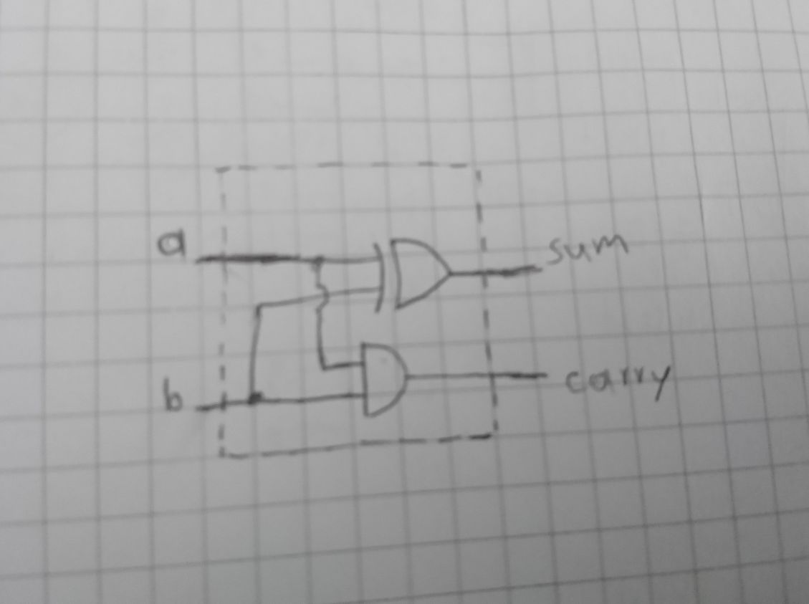Código con el que se solucionó el ejercicio
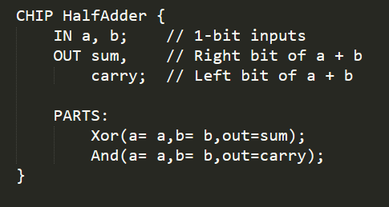El HALF ADDER nos permite sumar 2 bits, si nos fijamos detenidamnete en los valores que nos suministra la tabla de verdad el valor sum posee los mismos valores que nos da la tabla de verdad de la compuerta XOR, siendo este el bit menos significativo y de igual forma analizando los valores de la tabla en el Carry los valores son los de una compuerta AND, siendo este el bit más significativo.
FULL ADDER
Tabla de verdad del FULL ADDER
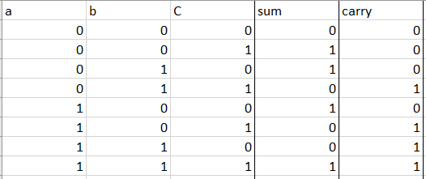Visualización grafica del FULL ADDER
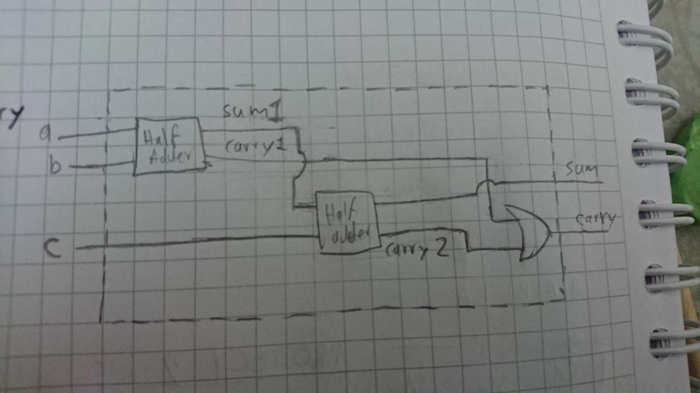Código con el que se solucionó el ejercicio
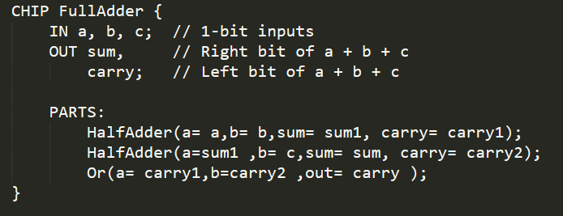Para el FULL ADDER si nos fijamos en la tabla de verdad podemos darnos cuenta que sus primeros valores son iguales a los del sum y carry del HALF ADDER y los segundos valores del carry son iguales a los de la compuerta OR, de esta manera utilizamos dos HALF ADDER para poder procesar las 3 entradas y si utilizamos un OR para procesar los carry de los HALF ADDER podemos obtener como resultado nuestro FUL ADDER.
ADD 16
Visualización grafica del ADD 16
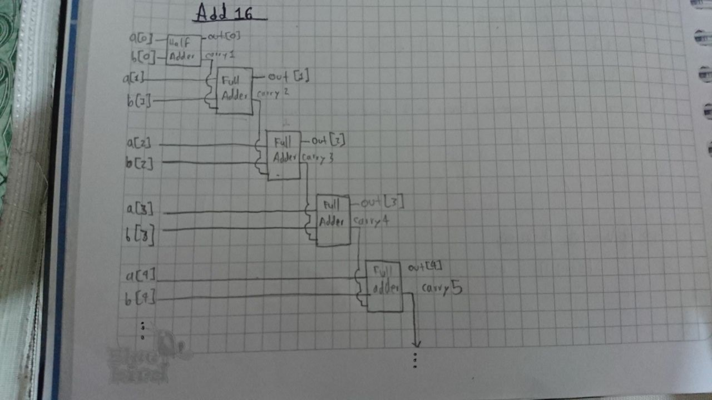Código con el que se solucionó el ejercicio
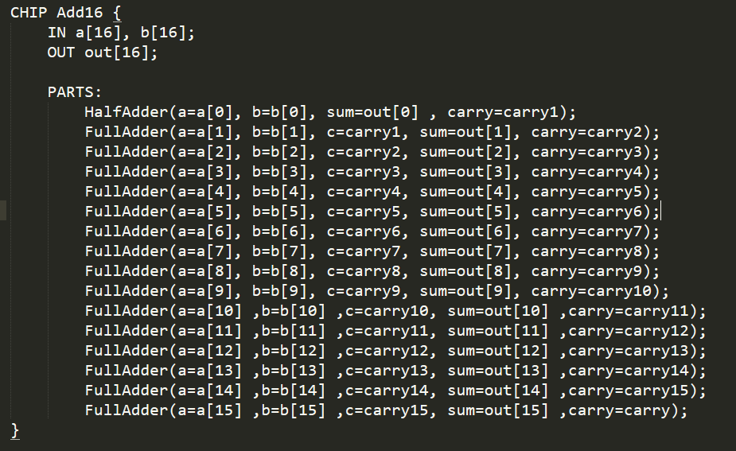Para el ADD 16 lo unico que hacemos es: primero conectar un HALF ADDER a las entradas a[0] y b[0], luego conectamos el carry de este HALF ADDER como la entrada c del FULL ADDER y a este las entradas a y b que corresponden, repetimos este proceso hasta que tengamos las 16 entadas a y b conectadas, de esta panera podemos obtener nuestro ADD 16.
INC 16
Visualización grafica del INC 16
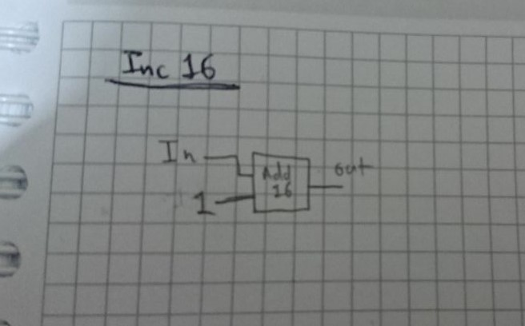Código con el que se solucionó el ejercicio
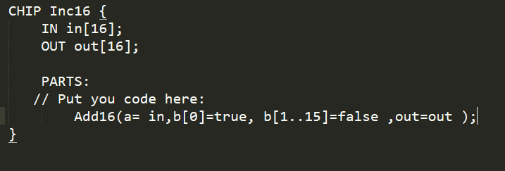Para el INC 16 lo unico que hacemos es usar un Add16 para controlar las todos los bits de la entrada, y usamos una entrada que nos que nos sume un valor de 0000000000000001 para poder obtener nuestra INC 16.
ALU
Aun en proceso de aprendizaje.
LISTA DE CONCEPTOS.
1.
- 1 es 00000001
- 0 es 00000000
- -1 es 11111111
- -128 es 00000001
- 127 es 11111110
- 128 es 00000001
- -130 es 01000001
2.
3.
2**8 = 256
2**16 = 65 536
2**32 = 4 294 967 296
4. La imagen muestra la tabla.
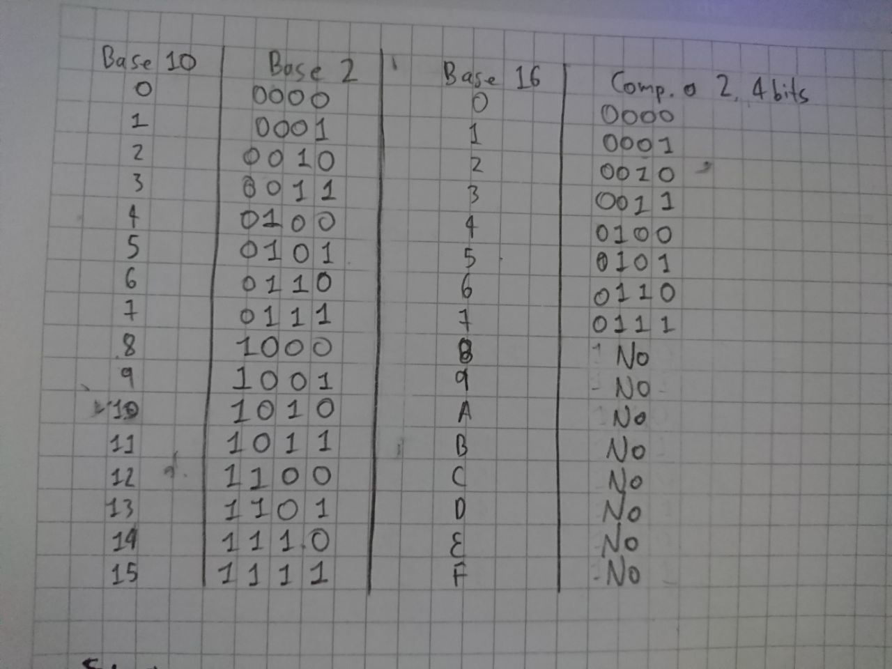5. La imagen muestra la suma.
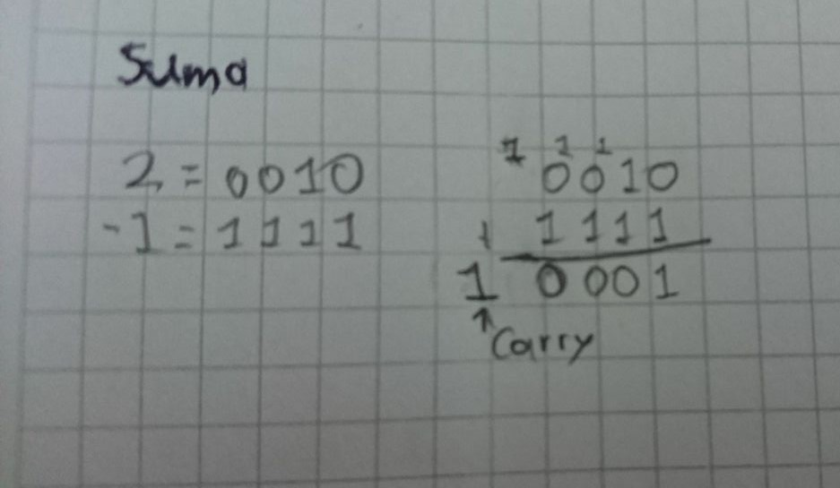6. La imagen muestra la suma.
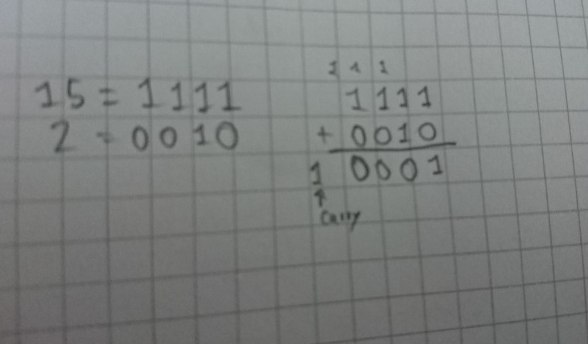7. La relación que encuentro es que el numero 15 como es mayor a 7 esta por de los valores que podemos representar, de esta manera dandonos un resultado que tampoco podemos representar.
8. Las computadoras pueden usar este metodo para realizar operaciones, ya que les permitirian hacer diferentes operaciones con un mismo chip.
9. El HALF ADDER nos permite sumar dos números de un bit, como en nuestro ejercicio sumabamos unicamente la entrada a con la b y el FULL ADDER lo que perimite es sumar 3 numeros, remontandonos a la acrividad podiamos sumar 3 numeros de un bit, las entradas a, b y c.
10. El carry es que en el momento de hacer la suma se produjo un numero ´mayor al que se podría graficar en ese momento, así que este valor se le tiene que sumar al numero de la izquierda y así sucesivamente.
11. AUN TRABAJANDO EN ALU.